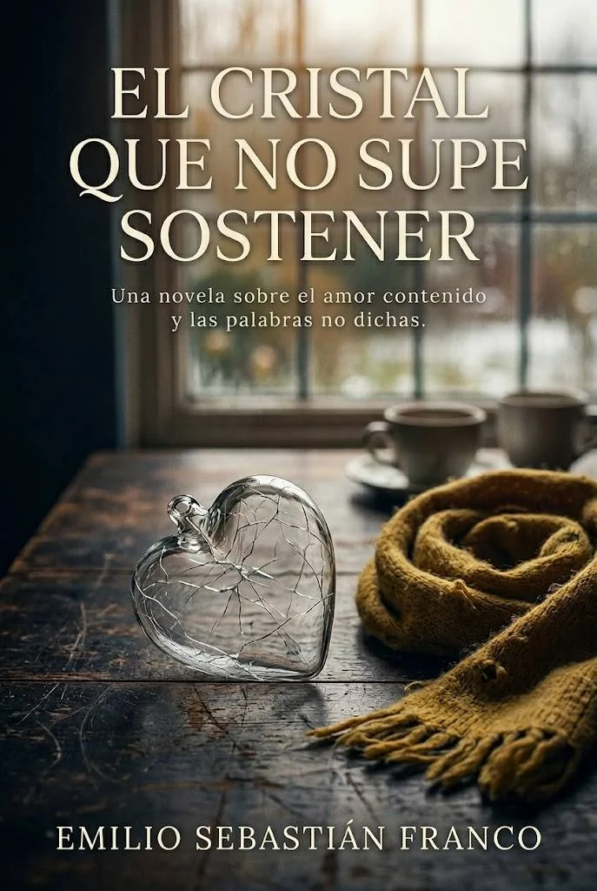

★★★★★
Jimena
“La verdad muy buen libro, atrapa desde el principio, me hizo llorar. Y espero que tenga continuación.”
“Nada mejor que además de ser buen libro conozco el autor y tuve la suerte de coincidir con él.”
Ver reseña en Amazon
Romance LGBT · Novela breve · Uruguay
Una historia íntima sobre el amor que se queda adentro, las palabras que no llegan a tiempo y el silencio que también puede romper.
Sinopsis
Mateo es un pintor montevideano que lleva toda la vida construyendo un milímetro de cristal entre él y el mundo. Cuando Lucas aparece en la puerta de su taller una tarde de lluvia, con una bufanda color mostaza y una sonrisa que no esconde nada, algo pequeño prende en el pecho de Mateo sin pedirle permiso.
Durante cuatro años comparten café, silencios, inviernos y un amor que Mateo siente con toda claridad pero nunca sabe cómo nombrar. Lucas espera. Con paciencia, con ternura, con la certeza callada de quien ama sin condiciones. Mateo lo protege todo detrás del cristal: el miedo, el amor, las palabras que se acumulan sin salir.
Cuando ya es demasiado tarde para decirlas, Mateo se encontrará parado frente a un altar, pensando en unos ojos castaños. Y ocho días después de su boda, recibirá una carta con una letra que reconoce desde el otro lado de la puerta.
El cristal que no supe sostener es una novela sobre el amor que se queda adentro, sobre los hombres que sienten profundo y callan demasiado, y sobre el precio exacto del silencio cuando alguien lo estaba esperando todo el tiempo.
Para quienes alguna vez guardaron las palabras demasiado tiempo.
Fragmento gratuito
Leé una muestra breve y no reveladora del tono de la novela antes de continuar en tu tienda preferida.
La lluvia no golpeaba la ciudad: la borraba de a poco. Mateo miró el vidrio empañado del taller y pensó que algunas distancias no se medían en metros, sino en todo lo que uno no se animaba a decir.
Del otro lado de la puerta, Lucas sonrió como si el mundo todavía pudiera ser sencillo.
Si este tono te encuentra en el lugar justo, la historia completa está disponible en formato digital.
Ver opciones de compraDónde comprar
Elegí tu tienda y seguí leyendo esta novela LGBT uruguaya en español.
Reseñas
“La verdad muy buen libro, atrapa desde el principio, me hizo llorar. Y espero que tenga continuación.”
“Nada mejor que además de ser buen libro conozco el autor y tuve la suerte de coincidir con él.”
Ver reseña en AmazonEste bloque está preparado para sumar nuevas opiniones reales cuando estén disponibles.
La página solo publicará opiniones reales y verificables de lectores.
Preguntas frecuentes
Podés comprar El cristal que no supe sostener en Amazon Kindle y Google Play Books.
Sí. Está disponible en Google Play Books como libro digital.
Sí. Está disponible en Amazon Kindle.
Sí. Es una novela LGBT de romance gay en español, ambientada en Uruguay.
Está escrito en español.
Es una novela breve, pensada para una lectura emocional, íntima y ágil.